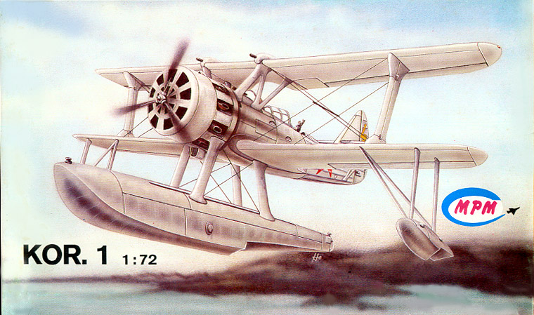
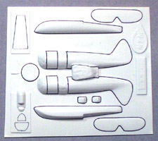
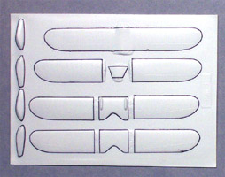
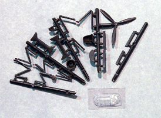
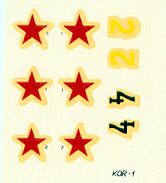

{kind=link}
{kind=link}
{kind=link}


MPM 1/72 KOR.1 Reconnaissance Plane

Kit #7207
Collector's Market Value $15.00
Images and text Copyright © 2005 by Matt Swan
Developmental Background
The KOR.1 was a classically designed seaplane being developed in 1934 by T. M. Beriev's design team to replace the obsolete KR-1 reconnaissance plane. It was intended to be launched by catapult from the 'Kirov' class cruisers and for use with the ice-breaking fleets then in use. The KOR.1 was constructed of a tubular steel framework with fabric covering on most surfaces. It featured dual controls for the pilot and the observer and the wing could be folded for ease of storage on-board the cruisers. It was powered by a radial nine cylinder air cooled engine producing 750 hp turning a three-blade metal propeller. It was armed more powerfully than most aircraft of its type for the period with two 7.62mm fixed machine guns mounted in the top wing. It was also designed to carry two 50kg or four 25kg bombs under the lower wing.
Original mission parameters for the aircraft included maritime reconnaissance, artillery spotting, dive bombing, liaison work and air-to-air combat. Unfortunately the large float and many guy wires created a high degree of drag which impacted the aircraft's performance negatively. As there were no alternative projects (probably a result of intensive political purges) production was pushed ahead. The aircraft was fitted with wheels for land use and filled a training role for several years. When the Great Patriotic War broke out it was pressed into service as a scout, artillery spotter and light strike aircraft. By this time the aircraft had been redesignated BE-2 and was retired from use on naval ships.
The Kit
Oh how I love the esoteric kits and this most certainly falls in to that category. This is an old Vacuform kit from MPM out of the Czech Republic. The kit itself has been out of production for longer than I care to think about and is one of two kits manufactured of the type (the other is the old Amodel kit - also out of production). As with all the MPM Vacuform kits the master parts sheets are based around a good, stout white polystyrene sheet run through a cavity mold vacuformer. All the primary aircraft body parts are on two small sheets and show fairly good detail. They also show a myriad of little tiny dimples from the vacuform process that will need to be shaved off. There is also a single small clear vacuformed piece that covers both the front and rear wind screens. Overall there are thirty-one vacuformed pieces.
Smaller detail pieces like the interior cockpit pieces, wing struts and float struts come on a few small sprues of that brittle brown plastic so common in these older MPM kits. Interior details are very brief and some items are totally lacking like a control yoke. Here we have nineteen plastic pieces giving us a total of fifty pieces in the box.



You may click on the small images above to view larger pictures
Decals and Instructions

The instructions come as a single A-3 sheet folded in half to form four panels printed on both sides. The cover panel provides a history of the aircraft in three languages. The second panel is a three view drawing of the aircraft, the third panel is a large exploded view of all the parts and the last panel is a general painting and marking guide. Federal standard numbers are provided for the exterior colors. Also there is a single sheet of general directions for working with vacuform kits but it is all in Czech.
The decal sheet is very brief providing the six basic stars and two unit numbers. The decal carrier film has yellowed with age and I have serious doubts that they will be usable.
Conclusions
This is not a beginners kit, let there be no doubt on that score. The basic pieces are all nicely molded and from previous experience with these old MPM vac kits they can be assembled into a nice model. The kit lacks interior details and that is where the real modeling comes into play as much of this stuff will have to be scratch built. The kit instructions are adequate to assemble the pieces and include a basic rigging diagram but lack anything for the somewhat intricate aerials that these aircraft carried. I think that what I'm trying to say is that this kit provides a good basic foundation that with some skill and patience can be transformed into a unique piece for your display.